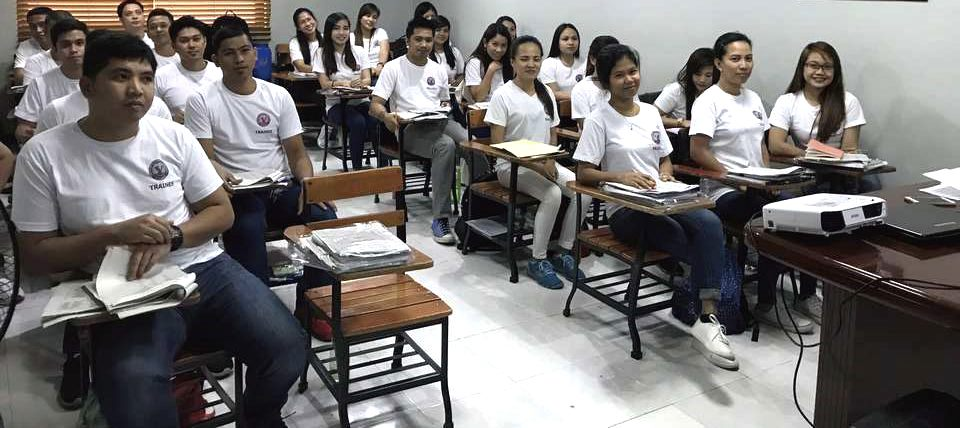
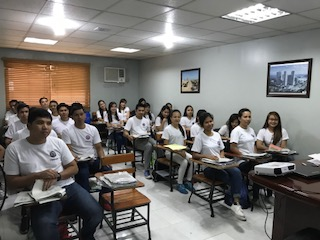
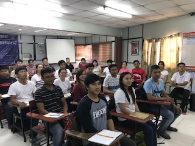

A and K
人と企業を、国境を越えてつなぐ
就労が可能な5つの在留資格すべてに対応しています。どの制度が合うかからご相談いただけます。
自社グループの監理団体を通じ、現地で選考した実習生をご紹介します。手続きの代行まで承ります。
登録支援機関として、受入れ後に義務づけられた支援も含めてお引き受けします。
資格外活動の許可を得た留学生のご紹介と、卒業後の就労ビザ切り替えをお手伝いします。
専門的な知識や技術を持つ人材を、職種と勤務内容に合わせてご紹介します。
就労に制限のない在留資格をお持ちの方のご紹介。すぐに働いていただけます。
特定技能で義務づけられている支援です。以下はすべて弊社がお引き受けします。
ご相談から就労開始までの目安です。ご相談の段階では費用はいただきません。
職種・人数・時期をお伺いし、どの在留資格が適しているかをご提案します。
条件を整理し、提携する現地の送り出し機関へ募集をかけます。
現地での書類選考ののち、オンラインまたは現地で面接していただきます。
在留資格の認定申請から査証の取得まで、書類の作成を代行します。
空港へのお迎え、住まいの手配、生活の案内まで。就労後も定期的に面談します。
監理団体を自社で設立しているため、募集から入国、就労後の支援までを一貫してお引き受けできます。
2021年8月、中小企業協同組合法にもとづき愛知県知事の許可を受けて弊社が設立した監理団体です。 技能実習生の受入れを、紹介から監理まで自社グループ内で完結できます。

日本へ人材を送り出すリクルートメントエージェンシー。現地での面接にお立ち会いいただくことも可能です。

2021年8月にブリッジング協同組合と業務提携。ベトナムとの手続きを早く進められます。
2019年9月に業務提携。愛知・岐阜・三重の企業さまや介護施設さまへの受入れを支えています。
（ここに代表ごあいさつの文章が入ります。創業の経緯、外国人材の受入れに取り組む理由、 受入企業さまと働く方の双方に対してどのような姿勢で臨んでいるか、といった内容を想定しています。）
（弊社はグループで保育園と児童発達支援事業も運営しており、外国籍のご家庭のお子さまもお預かりしています。 働く方の生活まで見てきた経験がある、という点は他社にない強みとしてお書きいただけます。）
ご相談・お見積りは無料です。制度の説明だけでも承ります。